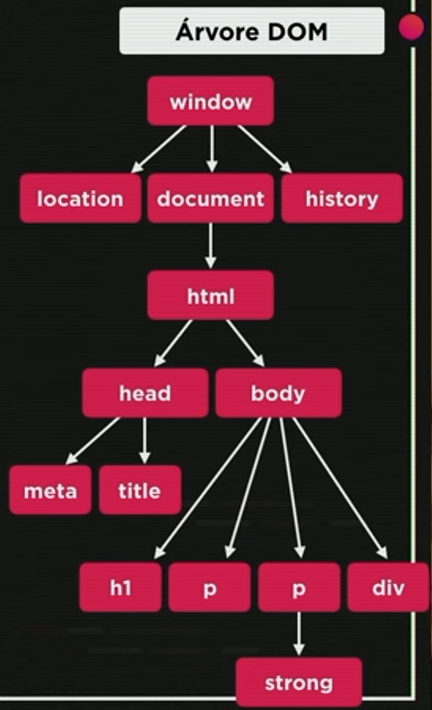

Operadores
Tipos de operadores:
- Aritméticos
- Atribuição
- Relacionais
- Lógicos
- Ternários
Aritméticos
Operadores aritméticos binários:
- + = Adição
- - = Subtração
- * = Multiplicação
- / = Divisão de número real (número com vírgula)
- % = Divisão de número inteiro (número sem vírgula) o resultado da operação é o resto
- ** = Potência
Exemplo:
- 5 + 2 = 7
- 5 - 2 = 3
- 5 * 2 = 10
- 5 / 2 = 2.5
- 5 % 2 = 1
- 5 ** 2 = 25
Ordem de Precedência das operações:
- ()
- **
- * / %
- + -
Simplificação
Caso uma variável chame ela mesma na operação, é possível usar o +=
Exemplo:
var n = 3
- n = n + 4
- n = n - 5
- n = n * 4
- n = n / 2
- n = n % 5
- n = n ** 2
O código passa a ficar:
- n += 4
- n -= 5
- n *= 4
- n /= 2
- n %= 5
- n **= 2
Incremento
Utilizada para adicionar 1 ou para subtrair 1.
- n++ = Soma +1 à variável n
- n-- = Subtrai -1 à variável n
Atribuição
Atribuição Simples
Exemplo:
- a = 5 + 3 - (8)
- b = a % 5 - (3)
- c = 5 * b ** 2 - (45)
- d = 10 - a / 2 - (6)
- e = 5 + 3 - (2)
- f = b % e + 4 / e - (3)
Relacionais
Tipos relacionais:
- > - Maior que
- <- Menor que
- >= - Maior ou igual que
- <=- Menor ou igual que
- == - Igual
- != - Diferente
NOTA: Todo o resultado de uma operação Relacional é Bouleano, pois o resultado será Verdadeiro ou Falso.
Identidade
Para verificar se as variáveis são idênticas ou desigual restrito, ou seja, se são iguais no valor e no tipo.
- === - Idêntico
- !== - Desigual restrito
Lógicos
- ! = Negação
- && = Conjunção
- || = Disjunção
Ternário
Realizar o teste lógico e informa o resultado verdadeiro ou falso.
- ? - Verdadeiro
- : - Falso
Exemplo 1:
var x = 6
var y = 9
x >= y ?'Sim' :'Não'
Sim
Exemplo 2:
var media = 6
var nota = 5
nota >= media ?'Aprovado' :'Reprovado'
'Reprovado'
Tipos Primitivos
- number
- infinity
- NaN
- string
- boolean
- null
- undefined
- object
- array
- function
Para saber qual o tipo a variável, basta digitar no node.js:
typeof (nome da variável)
O sinal "+" é utilizado para somar e para concatenar:
- Adição: Utilizada para variáveis number, soma números.
- Concatenação: Junta o texto com a informação da variável.
Number
Para definir se será número inteiro ou real temos as opções:
- var n1 = Number.parseInt(n) - Para números inteiros (1,2,3...)
- var n1 = Number.parseFloat(n) - Para números reais (1.3,2.4,3.8 ...)
Obs.: Caso possa ser utilizado tanto o número inteiro, quanto o real, pode ser utilizado apenas Number(n).
Transformações
Transformação de Number para String e vice-versa
Conversão de número para string:
- String(n)
- n.toString()
Transformação da moeda
Para transformar a moeda de acordo com cada país, há o exemplo abaixo:
var n1 = 1200.5
n1.toFixed(2) - Para que os centavos fiquem certos = 1200.50
n1.toLocaleString('pt-BR', {style: 'currency' currency:'BRL'}) - Para ficar na moeda Real = R$ 1,200.50
n1.toLocaleString('pt-BR', {style: 'currency' currency:'USD'}) - Para ficar na moeda Dolar = US$ 1,200.50
n1.toLocaleString('pt-BR', {style: 'currency' currency:'EUR'}) - Para ficar na moeda Euro = € 1,200.50
Obs.: o 'pt-BR' é a informação de onde a informação está sendo retirada.
Nota: Para substituir um termo por outro utiliza-se o código abaixo:
n1.toFixed(2).replace('.', ',') - R$ 1200,50
Formatações
Formatação de String
Pode ser utilizada duas formas, Concatenação e Template String.
Exemplo:
var s = JavaScript
- Concatenação: 'Eu estou aprendendo ' + s
- Template String: ´Eu estou aprendendo ´ ${s}
Nota: ${s} significa placeholder
Formatação de conteúdo
Para saber a quantidade de letras que um texto possui é utilizado o .leng
Para deixar um texto em maiúsculo é utilizado o .toUpperCase()
Para deixar um texto em minúscolo é utilizado o .toLowerCase()
Exemplo:
var nome = window.prompt('Qual o seu nome?')
document.write(´Olá, ${nome}! Seu nome tem ${nome.leng}´)
document.write(´Olá, seu nome em maiúscula é ${nome.toUpperCase()}´)
document.write(´Olá, seu nome em maiúscula é ${nome.toLowerCase()}´)
DOM
DOM é um acrônimo para Modelos de Objetos para Documentos:
- D = Document
- O = Object
- M = Modal
Conjunto de objetos dentro do navegador que dará acesso aos componentes internos do website.
Está presente quando está rodando o JS dentro no navegador.
Árvore DOM

É possível selecionar o elemento de cinco formas:
Marca (tag)
- getElementsByTagName()
ID
- getElementById()
Nome
- getElementsByName()
Classe
- getElementsByClassName()
Seletor
- querySelector()
- querySelectorAll()
Para utilizar o querySelector, é preciso indicar a tag e o nome da class/id.
Exemplo:
var d = window.document.querySelector('div.msg')
Quando houver mais de um elemento com a mesma tag, nome ou classe, é necessário indicar qual elemento deve ser utilizado.
Exemplo:
var p1 = window.document.getElementsByName('p')[0]
document.write(p1.innerHTML)
Obs.: O primeiro elemento é [0], o segundo [1], e assim por diante.
Para alterar a formatação de alguma variável, é preciso separar os elementos por '.'
Exemplo:
d.style.backgroud = 'dark'
Eventos DOM
Se trata de tudo o que pode acontecer com o elemento.
Para exibir diversos parágrafos no JS, é utilizado o +=
Exemplo:
dados.innerHTML = ` < p>Seu nome é ${nome}, e você tem ${idade} anos. < / p>`
dados.innerHTML += ` < p>Você gosta de ${hobby1} e ${hobby2}. < / p>`
Condições
Condições Simples
Quando há apenas uma condição. Não há necessidade de utilizar o "else".
Condições Composta
Quando há mais de uma condição.
Condição Aninhada
Dentro de uma "else" pode ter outros "if" e "else".